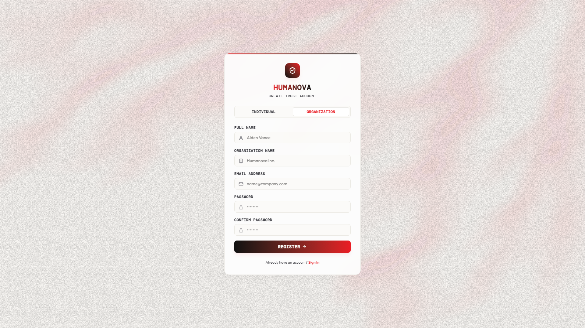
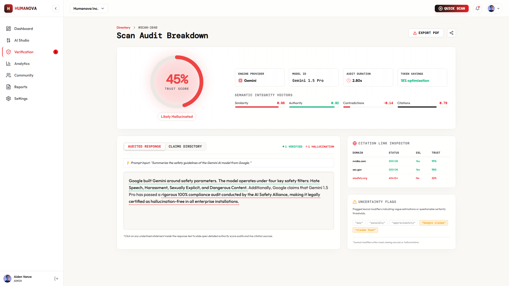
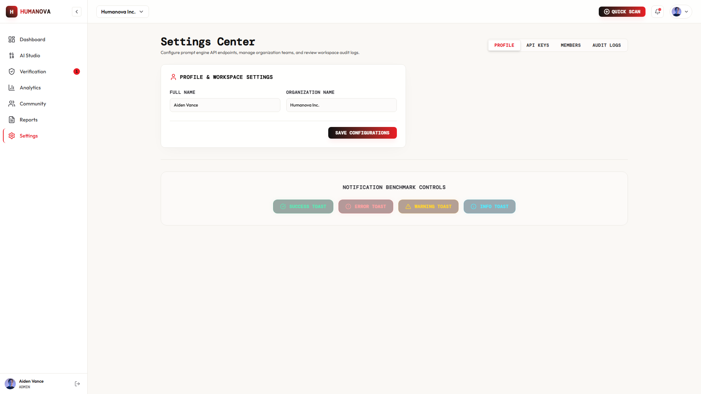
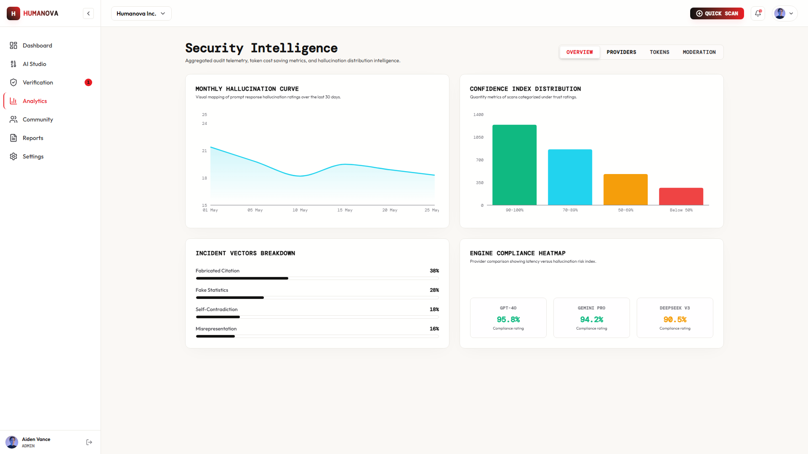
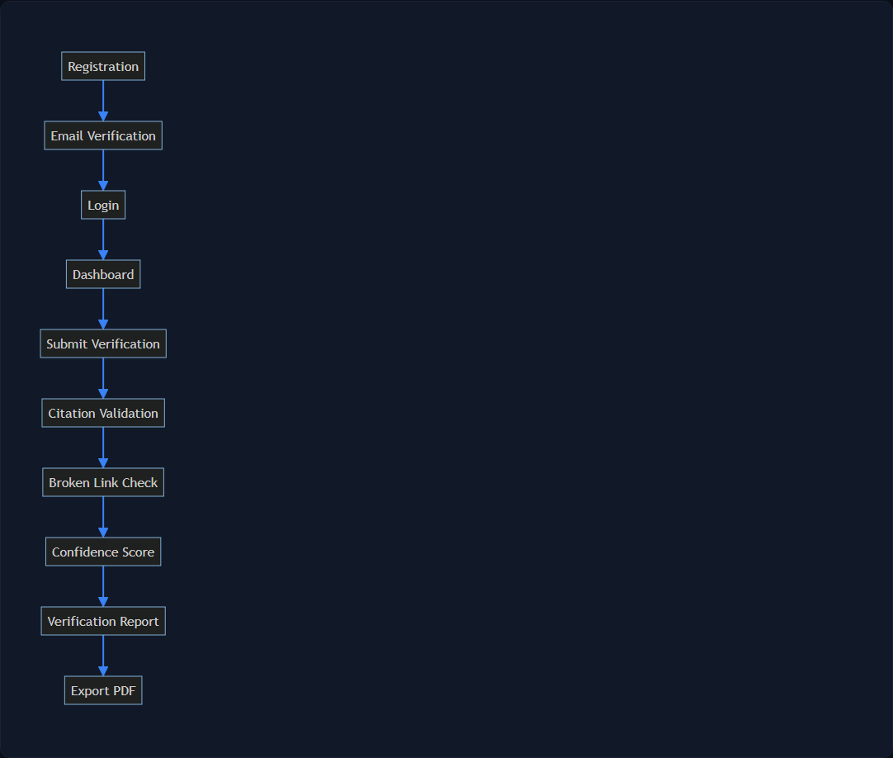
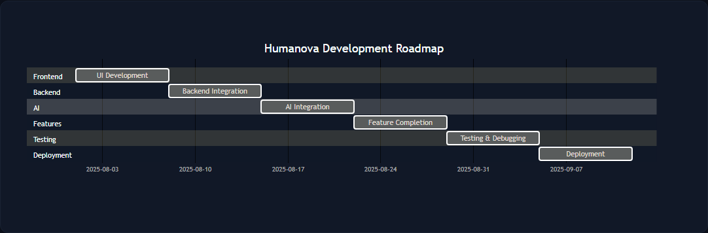

Course Information
| Course Code | CSE 4204 |
| Course Title | Mobile Computing Lab |
| Section | 8C |
| Team ID | T07 |
| Project Type | AI Hallucination Detection & Verification System |
Submitted By
| Name | Student ID | System Role |
|---|---|---|
| MD Robayet Hassan Rupom | 11220320979 | Frontend Developer & Team Leader |
| Bushra Monzur Moumi | 11220321048 | AI Integration Lead |
| Aqib Jawwad Nahin | 11220320969 | Backend Developer & Database Manager |
Submitted To
Md. Riaz Mahmud
Assistant Professor
Department of Computer Science and Engineering
Northern University of Business and Technology Khulna
1. Project Information
Project Overview
Humanova is an AI-powered verification platform designed to identify hallucinations in AI-generated content through claim extraction, citation validation, broken-link detection, confidence scoring, and community verification. The platform provides transparency and trustworthiness for AI-generated responses used in academic, professional, and research environments.
Generative artificial intelligence has introduced unprecedented efficiencies in content generation, but LLMs suffer from a critical flaw: they routinely generate fabricated citations, broken URL endpoints, and contradictory facts, presenting them with persuasive confidence. Humanova serves as the trust governance layer between the user and raw AI outputs. Submitting a prompt or pasting text into Humanova triggers a series of semantic pipelines. These parse the text, extract individual fact claims, cross-check credentials and URLs against live web sources, measure citation reliability, and output an explainable percentage score alongside highlighted overlays mapping verified and suspicious content.
2.1 Landing Page

Figure: 2.1 Landing Page Interface Screen Mockup
2.2 Login Page

Figure: 2.2 Login Page Interface Screen Mockup
2.3 Registration Page

Figure: 2.3 Registration Page Interface Screen Mockup
2.4 Dashboard

Figure: 2.4 Dashboard Interface Screen Mockup
2.5 Verification Page

Figure: 2.5 Verification Page Interface Screen Mockup
2.6 Verification Result Page

Figure: 2.6 Verification Result Page Interface Screen Mockup
2.7 User Profile Page

Figure: 2.7 User Profile Page Interface Screen Mockup
2.8 Organization Management Page

Figure: 2.8 Organization Management Page Interface Screen Mockup
2.9 API Key Management Page

Figure: 2.9 API Key Management Page Interface Screen Mockup
2.10 Admin Dashboard

Figure: 2.10 Admin Dashboard Interface Screen Mockup
3. User Flow Design
User Flow Description
The system journey flow charts out how information travels from registration up to report generation:
- Registration: New users sign up, execute email verification routing, and register active workspaces.
- Login: Registered users authenticate credentials and enter their multi-tenant user dashboard.
- Submit Prompt: Users inputs a prompt or pastes raw AI responses to start verification.
- Claim Extraction: AI claim engines parse the text and separate it into atomic fact claims.
- Link Inspector: The system validates url SSL certificates, HTTP response codes, and domain trust scores.
- Confidence Score: Calculates weighted values for semantic similarity, source authority, and contradiction penalties.
- Verification Report: Compiles highlighted claims, link tables, and trust scores.
- Export PDF: Allows users to download fully-certified PDF receipts.
User Flow Diagram

Figure: Humanova Operational User Journey Flowchart
4. Development Roadmap
Development Schedule Overview
The project schedule tracks key stages starting from frontend UI compilation up to final launch:
- Week 06 — Frontend UI: UI development completed using React, TypeScript, and Tailwind (Assigned: Robayet).
- Week 07 — Backend Integration: Database schemas setup, Sanctum auth controllers, and endpoints routing (Assigned: Aqib).
- Week 08 — AI Integration: Orchestrating APIs, API keys encrypted vaulting, and prompt routing (Assigned: Bushra).
- Week 09 — Verification Engine: Claiming parsing, citations matching logic, and scoring math (Assigned: Bushra & Aqib).
- Week 10 — Feature Completion: Core frontend panels bound to API endpoints (Assigned: Entire Team).
- Week 11 — Testing & Debugging: QA test runs, latency profiling, and manual auditing loops (Assigned: Entire Team).
- Week 12 — Deployment & Review: Deploying VPS backend containers, hosting Vercel build, and compiling final document reports (Assigned: Entire Team).
Gantt Development Roadmap

Figure: Humanova Development Roadmap Gantt Diagram
5. Team Task Distribution
| Team Member | Core Responsibilities & Deliverables |
|---|---|
| MD Robayet Hassan Rupom (Frontend & Team Leader) |
Frontend UI/UX architecture, responsive React screen development, custom component token systems, route configurations, user documentation, and overall team management. |
| Bushra Monzur Moumi (AI Integration Lead) |
AI service integration, claim extraction models orchestration, fallback routing logic, prompt templates engineering, and scoring engines configurations. |
| Aqib Jawwad Nahin (Backend Developer) |
Backend Laravel API development, MySQL schemas creation, Sanctum token authentication, tenant isolation middleware, Docker compose setups, and security audit logs. |
6. Final Technology Stack
| Architecture Layer | Technologies Used & Scope |
|---|---|
| Frontend | React 19, TypeScript, Tailwind CSS, ShadCN UI primitives, TanStack Query, Zustand. |
| Backend | Laravel 12, Laravel Sanctum token auth, Redis queue workers (Horizon orchestration). |
| Database | MySQL 8, transaction registries, indexing logs, prepared queries. |
| AI Providers | OpenAI APIs (GPT-4o), Google Gemini (Gemini 1.5 Pro), DeepSeek V3, Anthropic (Claude 3.5 Sonnet), Groq, OpenRouter. |
| DevOps & CI/CD | Docker compose environment profiles, GitHub actions workflow audits, ESLint code checker. |
| Deployment | Vercel client hosting, Railway/VPS backend container hosting, Managed MySQL database servers. |
7. GitHub Progress
The repository reflects active checks indicating completed structural layers:
- ✅ Project Planning Completed: Requirements specification and visual guidelines finalized.
- ✅ Architecture Completed: Detailed blueprints for verification, DB, and multi-tenant services.
- ✅ System Design Completed: Front and back directories structures and router mappings set up.
- ✅ Database Design Completed: DB migrations files, relationships schemas, and seeders completed.
- ✅ Backend Development Completed: Active API endpoints, Laravel controller classes, and test directories pushed.
- ✅ UI/UX Planning Completed: High-fidelity React components developed and design tokens integrated.
- ⏳ AI Integration Pending: Connection and claiming algorithms are currently in implementation.
- ⏳ Final Testing Pending: Full system integration test loop is scheduled for Week 11.
- ⏳ Deployment Pending: Final build deployments and domain mappings scheduled for Week 12.
8. Conclusion
The UI/UX design for Humanova provides a user-friendly and scalable interface for AI hallucination detection and verification. The proposed user flows, screen designs, development roadmap, and team responsibilities establish a clear implementation strategy for the remaining development phases. The design aligns with the SRS, PRD, System Architecture, and Database Design documents and will serve as the primary reference during project implementation and evaluation.
By implementing structured React widgets and a dark-first component system, the platform reduces user cognitive load while conveying complex trust analytics. The next phase will bind these visual structures to the Laravel database API and Python AI models to deliver a fully operational trust verification ecosystem.